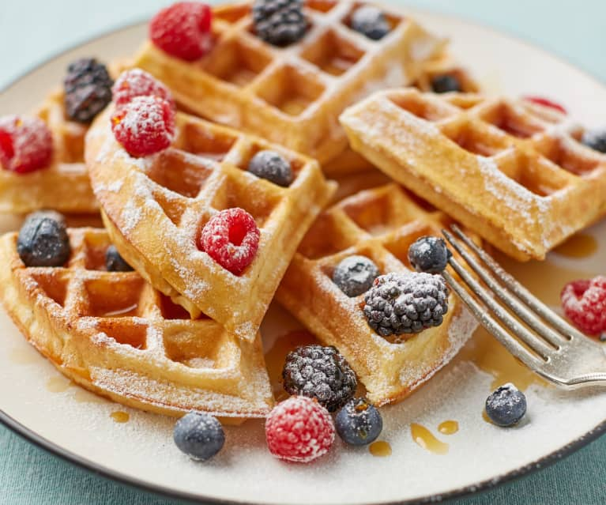

Waffles

A waffle is a dish made from leavened batter or dough that is cooked between two plates that are patterned to give a characteristic size, shape, and surface impression
There are many variations based on the type of waffle iron and recipe used.
This waffle recipe is the only one you'll need to make homemade waffles with your waffle iron.
ingredients:
- 2 large eggs
- 2 cups all-purpose flour
- 1 ¾ cups milk
- ½ cup vegetable oil
- 1 tablespoon white sugar
- 4 teaspoons baking powder
- ¼ teaspoon salt
- ½ teaspoon vanilla extract
- nonstick cooking spray
Instructions:
- Whisk the eggs, then add the flour, milk, and oil.
- Whisk in the sugar.
- Stir in the remaining ingredients.
- Pour the batter onto the hot, prepared waffle iron.
- Cook until golden brown and repeat with the remaining batter.